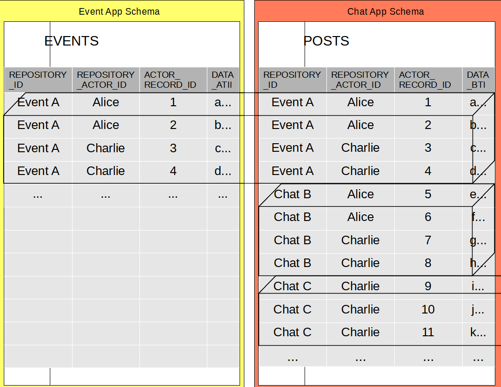

Sponsor Beyond Decentralized
Special Thanks
The following sponsors made foundational contributions to Beyond Decentralized.
Filecoin foundation was the first sponsor of AIRport development.
"Space Elevator" Benefactors:
Become a principal supporter of Beyond Decentralized.
Donation level: US$125K/year
"Detection Network" Benefactors:
Become a crucial supporter of Beyond Decentralized.
Donation level: US$50K/year
"Orbit Insertion" Benefactors:
Become a steering supporter of Beyond Decentralized.
Donation level: US$25K/year
"Portable Fusion" Sponsors:
You can become a driving sponsor of Beyond Decentralized on Github Sponsors.
Donation level: US$12K/year
Become a Sponsor
The Beyond Decentralized Sponsorship Program is the way for organizations and individuals to substantially contribute to development of the Internet of Databases.
In return, Beyond Decentralized will officially acknowledge your donation via various methods appropriate to your sponsorship level.
Sponsorship funds
Sponsorship funds will go directly towards funding development of Beyond Decentralized technologies.
- Conferences
- Hackathons
- Marketing and PR
Who can sponsor
Beyond Decentralized sponsors must be:
- An individual or a business located anywhere in the world that would be legal to operate anywhere in the United States and any state of nexus* for the Beyond Decentralized, excluding businesses, persons and jurisdiction limited by law. This is necessary to avoid legal risks and protect our non-profit status.
- Demonstrably committed to open source software and The Beyond Decentralized mission.
Landing pages for sponsor links cannot be advertisements or redirectors and must be “PG Rated” and safe for work environments. All links should go to a home page or a page with relevant, editorial content about open source software. Any sites with content unsuitable for minors must use a landing page that is completely child-safe, with appropriate warnings, and that meets US legal requirements such as the FTC’s COPPA requirements.
Beyond Decentralized is a Non-Profit Organization
Beyond Decentralized is a private operating foundation that is registered as a non-profit, charitable organization under Section 501(c)(3) of the U.S. Internal Revenue Code. This means that, for individuals within the U.S., donations to the Beyond Decentralized should be tax-deductible. We are not accountants, so this cannot be trusted as financial advice of any kind, but we hope this description will be useful to those who advise you in these matters. You may view our ruling letter from the IRS acknowledging our 501(c)3 status.
You may review the latest financial filings and non-profit exemption application of The Apache Software Foundation in our public records section.
AIR - Autonomous
Repositories are Autonomous because each Repository contains all of the information needed to be useful. That is, it can be used by itself, without any other Repositories. This refers to the fact that Repositories may reference each other's records. That is, a record in one Repository may have a foreign key to a record in another Repository.
When a Repository references records from other Repositories those records get copied to the referring Repository. This is what allows the referring repository to remain autonomous. The copied records have the state of the original records as it was when they were copied. The new record copies may then be updated and may diverge from the state of the records they were copied from (in referenced Repositories).
The copy process is recursive for all records that are, in turn, pointed to by the foreign keys in the (top level) copied records. This means that no matter how deep the foreign key references go, they all get copied into the referring Repository.
This has the effect of making sure that Joins (made on the tables where the Repository resides) always return data for the views to display. Thus, a Repository may be loaded (and will always be usable) by itself, even if it has nested references to records in many other Repositories.
AIR - Interdependent
When records are copied into a Repository from other Repositories, the original Repository GUID, Actor GUID and Actor Record Id are retained in separate columns. Along with them, the global address of the Repository is retained as well, allowing AIRport to lookup the referenced Repository (the source of the originally copied records).
These "original" Ids are retained in another set of keys that do not have foreign key constraints on them. AIRport can then be instructed to take a given Query and run it in cross-Repository mode. When doing so AIRport will use LEFT JOINs and progressively load missing Repositories and re-query until it returns complete object graphs with all of the records from the original Repositories.
The query process may be slow (due to necessary network round trips to retrieve additional Repositories) but may be served via Observables, allowing the UIs to progressively load more data as it becomes available.
Thus Repositories are Interdependent and the UIs can make the choice of viewing the Repository-local data only, or loading the cross-Repository view, that may at first return Repository-local data and then can fill in the data across referenced Repositories.
AIRport
AIRport is a DApp Runtime. It encapsulates decentralized storage, provides persistence and validation frameworks, and standardizes API calls.
AIRport implements Autonomous Interdependent Repositories. It provides a common runtime on which Decentralized Applications can run and be accessed by Clients such as Web UIs.

Alice has the Event App and the Chat App installed in AIRport ( on her device). Charlie has the Chat App and the Event Stats App installed on his device. The Event Stats App automatically installs the Event App and its schema.
The data for all three Apps is stored in Chat/Event specific Repositories, one repository per chat/event. Alice has "Event A" and "Event B" that are not shared with Charlie. Alice and Charlie share "Event C" and its chat. They participate in another "Chat D" that isn't associated with any event. Charlie has a "Chat E" that isn't shared with Alice.
The core functionality provided by AIRport is:
- Database ORMs and entity state management.
- API interfaces for UI-to-App and App-to-App interaction.
- Entity validation.
- Transactions & Scope.
- Cross-database data synchronization.
ORM & State
Default ORM framework for AIRport is Tarmaq. It provides:
- Entity Mapping API: Entity and Property decorators in JPA style.
- Query API: TypeScript integrated SQL statements with SELECT clause as entity tree.
- DAO API: Strongly typed entry points into the Query API.
AIRport supports creation of additional ORMs. All ORMs can return fully interlinked graphs of Entity objects. Support for traditional SQL result sets is also available.
AIRport has sessionless entity state management. All entity objects returned by the ORM contain a hidden property with the original state of the entity. When the entities are saved, AIRport calculates diffs on the entity objects (using the original object state) and performs the necessary updates. Tracking original state removes the need for maintaining Hibernate-like ORM sessions and insulates edited objects from possible state overwrites (due to remotely made updates to the same objects).
API
AIRport Apps run in isolated VMs inside AIRport. Clients (UIs) communicate with Apps via AIRport:

Apps define API methods by decorating them with @Api() decorator. AIRport generates SOAP like stubs for Clients and other Apps to use. Invoking those stubs sends requests to AIRport which forwards them to Apps where they are from (loading missing Apps when necessary). The default import of an Application contains just the API stubs. A separate bundle is created for Application itself (and is deployed as a standardized URL for AIRport to load into IFrames).
App VMs are run in IFrames. Because Application server domains differ, Apps are isolated from AIRport and other Apps (from different domains). The only way Apps can interact with AIRport and other Apps is via the API framework defined by AIRport.
Apps cannot directly access the relational database hosted by AIRport and must make standardized persistence requests (via provided ORMs) that are pre-processed and sanitized by AIRport.
Apps can join to tables in schemas of other Apps. Apps cannot directly modify data in schemas that belong to other Apps. Apps must call APIs defined by other Apps to make data modifications (in schemas of those other Apps).
Validation
AIRport is designed to bridge the client-server gap. Objects passed as parameters to API calls retain all changes when returned to the Client. And, objects passed into DAO.save methods are automatically updated to the saved state. Thus, there is no need for the Client to query for the new entity state (of the just saved entity objects). That state is automatically updated in the parameter object passed from the Client (the objects that were sent to the API to be saved).
Likewise, AIRport integrates data in the opposite (Client to Server) direction. The entity objects returned by APIs contain their original (previous) state (in a hidden/private property). The Client makes modifications to objects and sends them back. DAO.save calls then use the original (previous) state to determine which properties were modified. If the passed-in objects don't have the original state (or IDs) they are treated as new objects. DAO.save calls will persist all objects in the passed in object trees that are new/updated/to be deleted (as long as those objects are in the schema of the Application).
This seamless integration of client and server requires strict validation of all data that is passed into Application APIs. Validating via standard procedural calls is both verbose and error prone. AIRport includes a library that abstracts away the CRUD of validating API inputs.
AIRport validation leverages the Database Entity definitions and provides a type safe API that declaratively describes the desired (valid) state of the passed in entity tree. AIRport provides a validation DSL (in the form of validation functions, tied to the JSON entity tree declaration). All passed in state that is not validated is automatically flagged. All objects that are not validated are excluded from persistence operations. Non-validated properties (with new/modified values) on validated objects cause validation to fail.
Transactions & Scope
Every API call that goes through AIRport get's its own savepoint. This means that if an API method fails and throws an Error, all of its database operations (and operations of API methods it itself called) will be rolled back. If an API method is wrapped in a "try {} catch(e) {}" block, catching the Error will allow the calling API method to do additional processing (and database operations) even if its nested API calls failed.
Transaction tracking is implemented behind the scenes, without requiring the developers to pass transaction objects around. In the same way, request information for an API operations is also implemented in the background. API services and DAOs can just:
@Inject()
requestManager: RequestManager
Synchronization
AIRport handles synchronization of Repositories across multiple devices. If there are synchronization conflicts AIRport automatically resolves them based on modification timestamps (with latest modification winning) and records conflict resolutions and their outcomes in Repository transaction history. UIs can hook into that resolution history and notify the Users that there were conflicts. UIs can also present to the Users what the conflicting values were and allow the Users to manually overwrite automatic resolution outcomes.
Highway
Highway is AIR for the server environment.
Goal of Highway is to let local communities own their data while allowing global users to search it and contribute to it. The initial use case for it is a social network where locally operated and owned franchises host community data.
Technologically this can be accomplished by leveraging existing technologies such as globally shardable CockroachDB and ScyllaDB databases. Autonomous Interdependent Repositories are used for integration with private user data, for performance benefits and to provide an eventual migration path to Maglev.

Highway will work by sending modification requests to the server, where they will be processed and placed into a distributed relational database. Because Highway data is stored in Repositories, read queries will go against a wide column store. Transaction logs will be pulled into the client-side AIRport engine where relational data will be reconstructed and queried. AIRport will monitor incoming transaction log entries and serve data via Observable feeds.
Highway will allow Applications from multiple providers to access and add to community owned data. Apps will access data across Application schemas and modify data in their own own schemas. This will be done based on rules specified by the community owned hosting franchises.
Applications will run in VMs and will have access to only the APIs specified by AIRport, thus preventing abuse of community data.
Maglev
Maglev is the AIR Internet. It connects Highway providers.
Maglev is about allowing organizations to interoperate in an ecosystem of Repositories.

AIRport can run on a trusted network of execution nodes (a la blockchain validator nodes) and work with Repositories from multiple Organizations. Running AIRport on execution nodes ensures fairness and security of data processing and protects organizations and their data. AIRport can enforce data sharing and modification rules specified by each organization that hosts the data. Under those rules it can allow third party Applications access organization (and community) owned data. AIRport execution nodes can work in concert with Client-side AIRport engines to give views on decentralized data, combined with "organization distributed" data.